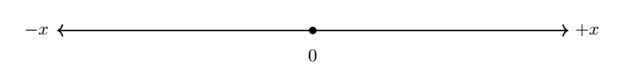

Linear Momentum: Point Particle#
We are often using the term motion in daily language, and we seem rather unbothered by the fact that we really don’t know what it means. I often ask the class the following question:
Which of the following has more motion? A sedan traveling at 70 mph or a semi-truck traveling at 70 mph?
The majority of students will answer incorrectly that they have the same motion since they are traveling at the same speed. We equate motion to speed, but that is not correct from a physics point of view.
The exact definition of motion comes from Newton’s vision of how objects interact. He showed through demonstrations that in order to change the motion of an object, an unbalanced force had to be applied to that object.
Now consider Newton’s formulation of motion applied to this scenario:
A sedan and a semi-truck are both traveling at 70 mph. Which one requires a greater interaction to come to a complete stop?
Without having to put much thought into this, everybody will naturally say the semi-truck requires greater interaction. This should leave us to conclude that the more massive object of the two has more motion than the object with less mass. Hence, motion of the object depends not only on how fast it moves, but also its mass.
2. Reference Frame#
From our encounter with momentum, we used the example of a sedan vs. a semi-truck to argue our case that motion was more than just speed, but also depended on the mass of the moving object:
A sedan and a semi-truck are both traveling at 70 mph. Which one requires a greater interaction to come to a complete stop?
Let us take it one step further now. Imagine a sail boat moving across Utah Lake with a certain speed (or momentum). There is an interaction on the sail boat due to strong winds and the change in momentum will depend on the directions of both the sail boat and the wind: a tail wind will speed up the sail boat and increase its momentum, while a headwind will reduce its speed and its momentum.
This example tells us that in order to say something about momentum, we will also need to know something about the direction of travel of the object. For those of you who are already familiar with vectors, you will recognize that momentum is indeed a vector. We will introduce the concept of a vector in Phase C. Until now the magnitude of momentum depends on mass and speed, however, mass is not associated with direction. Speed is not associated with a direction either (think of a speedometer in car, it does not say anything about direction of travel). We can attach a direction to the speed and that gives us a new quantity: velocity.
For us to be able to specify a direction that is useful in physics and mathematics languages, we need to introduce a reference frame or coordinate system. In physics, we encounter both simple and advanced coordinate systems, and in this course we will apply two systems: cartesian system and polar system. In Phase D, we will only use 1D Cartesian system, while the 2D and 3D Cartesian system will be utilized in Phase C. Polar system will be introduced in Phase A.
While the reference frame provides us with a sense of direction, it also provides a reference point of which we can relate certain measurements. This reference point is the origin of the reference system.
While we may think of these reference frames being simple, they are indeed more complex than we may think and relates to the algebra they are formulated in. Fortunately, we do not have to worry about that in this course. I suggest you read the wikipedia page on Cartesian Coordinate System
3. 1D Cartesian System#
The 1D cartesian system is represented just like a number line in elementary school. The difference here is that the positive and negative numbers now represents a sense of direction to us. For example, in the sketch below, positive numbers will represent parameters that directed to the right, whereas negative numbers indicate parameters directed to the left.
The 1D system could also be directed in the vertical direction on the page (or screen), and we then often label it \(y\) or \(z\) instead of \(x\).
4. Momentum#
Based on our sedan vs. semi-truck, we could reason to define momentum (without a sense of direction) as
where \(m\) is the mass of the particle and \(v\) is its speed. However, we argued with the sail boat example that momemtum must be associated with a direction as well. For 1D motion, we will now be more specific to indicate the direction of momentum (or motion) by using a subscript:
The measure of momentum without direction (Equation 1) is referred to as the magnitude of the momentum.
Now we are ready to explore that in 1D motion.
Example 1#
Problem: A Subaru Outback (a particle) has a mass of 1648 kg and is traveling in the \(+x\) direction with a speed of 32 m/s. What is the momentum of the Subaru?
Methodology We are given the mass, the speed, and the direction of the vehicle. The combination of speed and direction allows us to determine the velocity of the vehicle. With that information we can calculate the momentum of the Subaru simply by plug and chuck approach.
Solution The magnitude of the momentum is
The Subaru is traveling in the positive direction, and its momentum must therefore be signed as positive:
Answer
Example 2#
Problem: A Subaru Outback (a particle) has a mass of 1648 kg and is traveling in the \(-x\) direction with a speed of 32 m/s. What is the momentum of the Subaru?
Methodology We are given the mass, the speed, and the direction of the vehicle. The combination of speed and direction allows us to determine the velocity of the vehicle. With that information we can calculate the momentum of the Subaru simply by plug and chuck approach.
Solution The magnitude of the momentum is the same as in Example 1 since a magnitude does not carry direction:
However, the momentum does carry direction and since the object travels in the established negative direction with a velocity of \(v_x = -32\) m/s, the momentum is therefore
Answer